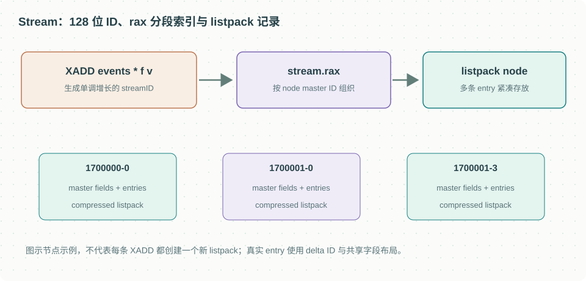
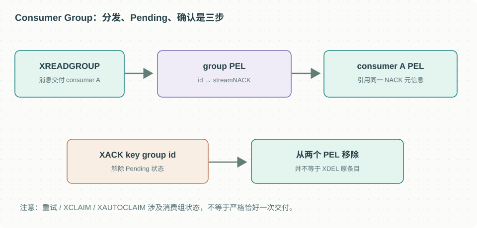
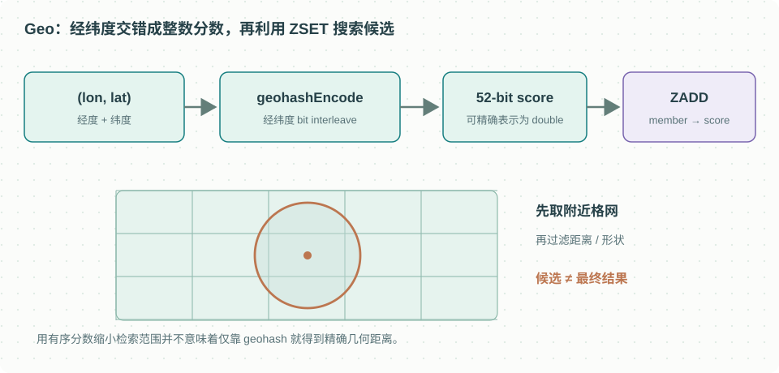
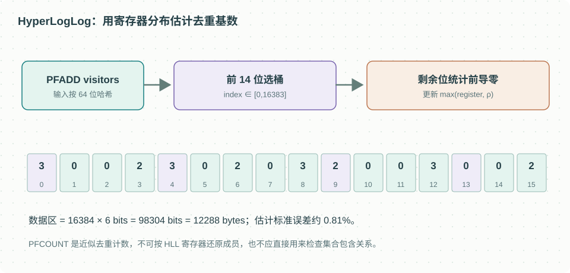

Chapter 12 / Redis 7.2.4 Source Anatomy
Stream、Geo 与 HyperLogLog：历史、空间与近似基数
用 rax/listpack、双层 Pending 列表、52 位 GeoHash 得分和 16384 个 HLL 寄存器，把三种截然不同的 Redis 功能讲清楚。
Stream、Geo 与 HLL 为什么不等于三个新容器？
有三种看似相似但不能互换的需求：保存发生过的事件并按 ID 重读；按城市或经纬度检索附近成员；只估算海量访问者中有多少不同 ID。前两者涉及历史顺序或位置关系，第三者以准确性换较小的常量空间。
Redis 7.2.4 的内部表示也截然不同：Stream 使用基数树（rax）定位包含若干记录的 listpack；Geo 复用 ZSET，把经纬度编码到可排序的数值分数；HyperLogLog 存为具备专用头部格式的 String 值，维护多个估算寄存器。这三套方案有不同的不变量、命令和误差来源，不应因为都常用于分析就放在一张“概率数据结构”图里。
Stream 数据结构：128 位 ID 与 rax/listpack 分段
在 stream.h，streamID 是两个 64 位无符号整数：ms（毫秒时间）与 seq（序列号）。stream 包含 rax *rax、长度、最后/最早有效 ID 等元信息。streamNextID() 通常使用命令时钟产生新 ID；同毫秒内或时钟回退时通过增大序列维持严格递增。

每个 rax 结点指向紧凑的 listpack，listpack 内部通过 master entry 共享字段名称，并可对部分 ID 做增量编码以减少空间。消费者在意的单条消息 ID 不一定等于对应 rax 键上的 master ID。读取时 streamIterator 把底层结构抽象为逐消息/字段的迭代器；单条 XRANGE 不必展开全部 Stream 才能定位起始 ID。
/* src/stream.h（仅保留两个关键结构） */
typedef struct streamID { uint64_t ms; uint64_t seq; } streamID;
typedef struct stream {
rax *rax;
uint64_t length;
streamID last_id;
streamID first_id;
/* ... tombstones, cgroups, statistics ... */
} stream;XADD 在 t_stream.c 的 xaddCommand() 中解析选项、查找或创建 Stream，调用 streamAppendItem()，对回复返回有效的 ID。若使用 * 自动生成 ID，传播到 AOF/replica 的命令可以被重写为确定的 ID，以避免重放生成不同标识。错误地显式使用 0-0 不会被接受，时间戳相等时也必须保证 ID 比现有最后 ID 大。
消费组：历史消息、已交付消息与已确认消息的区别
XREAD 是按给定 ID 读取流，不自动维护某个客户端的消费组确认进度；XREADGROUP 需要一个消费组和消费者名，会基于消费组状态交付消息。Redis 7.2.4 的 streamCG 持有 last_id 和一份 group 级 pel，每个 streamConsumer 也有自己的 pel。两层 PEL 使用同一条 streamNACK 元信息记录最后交付时间、交付次数和消费者。

当消费者从 XREADGROUP ... STREAMS key > 获取新消息，且未使用 NOACK 时，它通常进入 Pending。应用完成业务后应该主动 XACK。XACK 在 t_stream.c 中同时从 group 和 consumer PEL 删除相应 ID，并释放 NACK 状态；它不是 XDEL，不会因确认而必然删除 Stream 原始记录。故 Stream 能提供显式进度与重试机制，但仍不自动保证端到端“恰好一次”业务效果。
模型显示可解释的概念分支，不执行真实 Redis 命令。
运行实验：用 XACK 观察 Pending 变化
把新键放在独立 6390 测试实例。下面的 shell 变量拿到真实生成的消息 ID，因此不猜测系统时间。不要在长期共享 Stream 上运行 XGROUP CREATE 与 DEL。
./src/redis-server --bind 127.0.0.1 --port 6390 --save "" --appendonly no
./src/redis-cli -p 6390 DEL demo:stream
./src/redis-cli -p 6390 XGROUP CREATE demo:stream workers 0 MKSTREAM
id=$(./src/redis-cli -p 6390 --raw XADD demo:stream '*' type click user alice)
echo "$id"
./src/redis-cli -p 6390 XREADGROUP GROUP workers consumer-a COUNT 1 STREAMS demo:stream '>'
./src/redis-cli -p 6390 XPENDING demo:stream workers
./src/redis-cli -p 6390 XACK demo:stream workers "$id"
./src/redis-cli -p 6390 XPENDING demo:stream workers
./src/redis-cli -p 6390 XLEN demo:stream预期第一次 XREADGROUP 返回 XADD 创建的条目，XPENDING 总数先为 1，XACK 返回 1，之后 XPENDING 总数降至 0；XLEN 仍为 1。若误将 XLEN 视为“尚未确认的条目数”，就会误诊消费状态。实验结束后由 SHUTDOWN NOSAVE 关闭独立实例。
Geo 的得分为什么是一串交错的二进制位？
GEOADD 解析经度、纬度和成员名，在 geo.c 中调用 geohashEncodeWGS84()，接着通过 geohashAlign52Bits() 得到整数分数，最终将命令向量改写成 ZADD 形式。地理坐标不是在 Redis 里建立第二种特殊 B-Tree；它复用 ZSET 已具备的有序分数索引。

GeoHash 把两个维度的离散化位交错成一个整数，空间上接近的点通常落在接近的前缀区间。但这不等于一维 Geohash 分数顺序能直接表示精确的球面距离：跨格网边界的附近点可能被分配到相距较远的分数段。因此半径搜索会考虑相邻格网候选，并在取得候选后计算距离过滤。GEOSEARCH 的排序或计数选项另有额外工作，不能声称“附近查询严格 O(log n)”。
./src/redis-cli -p 6390 GEOADD demo:geo 116.397 39.908 beijing 121.474 31.230 shanghai
./src/redis-cli -p 6390 TYPE demo:geo
./src/redis-cli -p 6390 GEODIST demo:geo beijing shanghai km
./src/redis-cli -p 6390 GEOSEARCH demo:geo FROMLONLAT 116.397 39.908 BYRADIUS 20 km
./src/redis-cli -p 6390 ZRANGE demo:geo 0 -1 WITHSCORES预期 TYPE demo:geo 是 zset。GEOSEARCH 的小半径结果包含 beijing、不包含距离很远的 shanghai。ZRANGE 展示的是以整数化 geohash 表示的排序得分，不是经纬度的文本串。
HyperLogLog：为什么 12KiB 附近能估算海量去重数？
如果为每个唯一用户 ID 建立 Set，成员数不断上升时空间开销也会持续增长。HyperLogLog 不保存完整成员名单，而是把输入哈希到多个寄存器，统计每个寄存器里观察到的最大前导零模式；从寄存器分布推算总体基数。

hyperloglog.c 定义 HLL_P=14、HLL_REGISTERS=16384、HLL_BITS=6。因此稠密寄存器数据区大小为 字节，即 12 KiB，外加 HLL 元数据头部。它还支持初期较省空间的 sparse 表示，条件满足后转为 dense。理论相对标准误差为：
它不是针对每次 PFCOUNT 的确定误差上界。
模型显示可解释的概念分支，不执行真实 Redis 命令。
这里有一个对象类型上的陷阱：PFADD 创建的 HyperLogLog 使用 Redis String 类型存储专用的 HLL 字节格式，并由 magic header 识别。TYPE hllkey 显示 String 并不意味着普通 GET 得到的是可阅读文本，也不代表它等同 Set。
./src/redis-cli -p 6390 PFADD demo:hll a b c a
./src/redis-cli -p 6390 PFCOUNT demo:hll
./src/redis-cli -p 6390 TYPE demo:hll
./src/redis-cli -p 6390 STRLEN demo:hllPFCOUNT 的结果应接近 3，示例较小时常会显示 3，但算法语义是估计而非保证对所有输入严格等于真实基数。STRLEN 返回当前 HLL 序列化格式的字节长度，不是成员个数。这个结构无法列出原来添加过哪些字符串，也不能做精确 SINTER。
三种结构放在同一张需求决策表里
| 需求 | 应该从哪种结构开始 | 为什么别选另一个 |
|---|---|---|
| 记录不可变事件 ID、读取历史与消费进度 | Stream（rax/listpack + groups/PEL） | Set 无历史顺序和 Pending 机制 |
| 附近检索、地理范围 | Geo（ZSET + Geohash） | 普通 ZSET 分数不自动转换为空间距离 |
| 高吞吐近似独立访问人数 | HyperLogLog（sparse/dense registers） | 精确 Set 需要随成员增长的空间 |
| 需要精确判断某 ID 是否出现 | Set 或其他精确索引 | HLL 无法枚举成员或给单个 ID 判定 |
还有一个经常混淆的“概率”概念：HLL 的误差来自估计模型，不是随机丢消息；Stream 的消费组能跟踪待确认，不等于外部业务已提交；Geo 的候选格网过滤也不是“计算地理距离的随机算法”。三者独立设计、独立测试。
源码与参考文献
以下源码链接均锁定 Redis 7.2.4。图解表示主要执行路径；版本、配置、参数与边界条件均可能改变分支。最新 Redis 命令文档不应反向用于推断 7.2.4 所有细节。